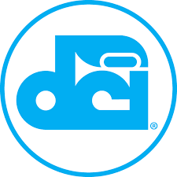
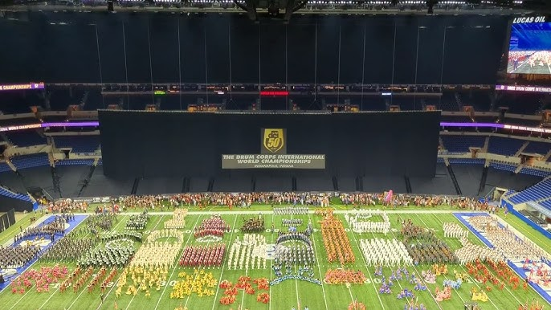

The Boston Crusaders Drum and Bugle Corps
Founded in 1940 as the Most Prescious Blood Crusaders, the organization has grown exponentially over the last 82 years. The group is a charter member of Drum Corps International, a competitive circuit for Drum and Bugle corps all across the World.
The Drum Corps International Logo
What is Drum Corps International?
Drum Corps International, abbreviated as D.C.I, is a competitive circuit for Drum and Bugle Corps from around the world. Ensembles are comprised of 4 main sections: the Hornline, the Battery, the Front Ensemble, and the Color Guard. The hornline is comprised of brass instruments, including the trumpet, mellophone, baritone, and tuba. The Battery, or drumline, is made up of snare, tenor, and bass drums. The front ensemble includes various percussion instruments, including but not limited to marimbas, vibraphones, timpani, pianos, and cymbals. Finally, members of the Color Guard spin equipment including flags, rifles, and sabres.
Each corps spends several weeks learning and polishing their show, before embarking on a tour of the nation, performing at various D.C.I. competitions. The ensembles are scored the categories of Music, Visual, and General Effect. This competition season culminates at Drum Corps International Finals in Indianapolis, held in Lucas Oil stadium, where the corps put on their best performances of the year and are awarded their final placements.
The top 12 corps of 2022 on the field at Lucas Oil Stadium
I have plans to add more content to this page, in terms of information and a few images.